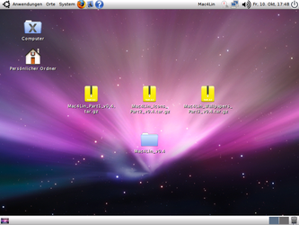
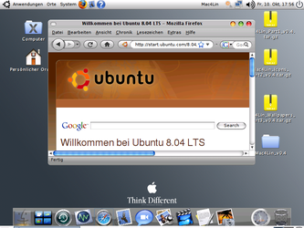

Mac OS X-Theme
Archivierte Anleitung
Dieser Artikel wurde archiviert, da er - oder Teile daraus - nur noch unter einer älteren Ubuntu-Version nutzbar ist. Diese Anleitung wird vom Wiki-Team weder auf Richtigkeit überprüft noch anderweitig gepflegt. Zusätzlich wurde der Artikel für weitere Änderungen gesperrt.
Anmerkung: Für die letzte getestete Ubuntu-Version 10.04 wird Macbuntu empfohlen, damit ist der eigentliche Inhalt veraltet. Für neuere Ubuntu-Version eignet sich MBuntu  .
.
Zum Verständnis dieses Artikels sind folgende Seiten hilfreich:
Hinweis:
In diesem Artikel wird davon ausgegangen, dass der GNOME 2-Desktop (und nicht Unity) verwendet wird, da Mac4Lin vor allem für diesen optimiert ist. Aber auch Xubuntu-Nutzer/innen können einige Anregungen umsetzen, da Xfce ebenfalls auf GTK beruht.
Viele Ubuntu-Benutzer wollen ihren Desktop möglichst "Mac-like" gestalten. Wie dies funktioniert, wird hier anhand von Mac4Lin beschrieben.
Leider hat Mac4Lin nicht mit einigen Neuerungen in jüngeren Ubuntu-Versionen Schritt gehalten. So werden z.B. immer noch GRUB-Designs mitgeliefert, die mit dem ab Ubuntu 9.10 vorinstalliertem GRUB 2 inkompatibel und damit unbrauchbar sind. Auch die Bootsplash-Designs können nicht mehr genutzt werden, genauso wenig wie die Designa für GDM und Thunderbird 2. Diese Situation ist auch der Grund, warum das später erwähnte (automatische) Installations-Skript nicht verwendet werden sollte! Gerade Einsteiger können sich damit ziemlich schnell das System ruinieren.
Macbuntu¶
Macbuntu ist eine empfehlenswerte Alternative zu Mac4Lin. Für Macubuntu spricht, dass es ausdrücklich für Ubuntu 10.04 gedacht ist. An dieser Stelle nur einige Bilder zu Macbuntu.
Aber nun zurück zu Mac4Lin, dessen Anpassungen bis Ubuntu 9.04 problemlos funktionierten, ab Ubuntu 9.10 aber besser nur teilweise übernommen werden sollten.
Mac4Lin¶
Mac4Lin ist ein Paket aus vielen Dateien, mit denen man seinem GNOME-Desktop das Aussehen von Mac OS X geben kann. Enthalten sind Stylepakete für mehrere gängige Programme und die GNOME-Desktop-Umgebung selbst.
Auch ein Skript (Mac4Lin_Install_v1.0.sh bzw. Mac4Lin_Uninstall_v1.0.sh) ist vorhanden, das die mühsame Installations-Arbeit erledigt. Von diesem wird aber allgemein abgeraten, da es u.U. einige ungewünschte Eingriffe ins System vornimmt. Allerdings kann man anhand des Skripts nachvollziehen, welche Schritte bei der Installation vorgenommen werden, und bei Bedarf das Skript dem eigenen Geschmack entsprechend anpassen.
Achtung!
Ab Ubuntu 9.10 sollte das Installations-Skript nur bearbeitet verwendet werden!
Ein Vorgeschmack¶
Zwei Beispielbilder. Es ist zu beachten, dass das Ergebnis je nach installierten Anwendungen leicht unterschiedlich aussehen kann.
|  |
| Ubuntu 8.04 mit Mac4Lin |
|  |
| Mac4Lin mit Glx-Dock |
Liste der enthaltenen Designpakete¶
drei GRUB- und zwei Bootsplash-Designs
zwei GTK- und ein Metacity-Design
Symbole (Icons)
Schriften (Fonts)
Mauszeiger (Cursor)
Systemklänge (Sounds)
Hintergrundbilder (Wallpaper)
Designs für
Avant Window Navigator (AWN)
Firefox 3, Thunderbird 2 und Pidgin
Installationsdateien¶
Die notwendigen Dateien findet man bei SourceForge . Seit Mitte 2009 ist die Version 1.0  (ca. 30 MB) verfügbar.
(ca. 30 MB) verfügbar.
Installation¶
Vor der Installation muss die heruntergeladene Archivdatei an eine beliebige Stelle, z.B. ins Homeverzeichnis, entpackt [2] werden. Die einzelnen Komponenten befinden sich in entsprechend benannten Unterordnern, die meist wiederum eine Archivdatei enthalten, die noch entpackt werden muss. Versteckte Ordner mit der Bezeichnung .svn enthalten in der Entwicklung befindliche Komponenten und können entfernt werden.
Weitergehende Möglichkeiten¶
Weitere Mac-Designs¶
Alternativen zum Mac4Lin-Designs finden sich auf:
xfce-look.org
(Inhalt z.T. deckungsgleich mit gnome-look.org)http://namakutux.blogspot.de/2012/05/how-to-install-mac-os-x-lion-theme-on.html
Anleitung für LXDE / Lubuntu
Die Schriftarten¶
Die Wahl der Schriftarten ist Geschmackssache, drei Varianten werden hier vorgestellt:
| Variante 1 | ||
| Ort | Schriftart | Schriftgröße |
| Schriftart in Anwendungen | Lucida Grande | 10 |
| Dokumenten-Schrift | Lucida Grande | 10 |
| Desktop-Schriftart | Trebuched MS Fett | 10 |
| Schrift in Fenstertiteln | Lucida Grande Bold | 9 |
| Dicktengleiche Schrift | Monospace | 10 |
| Variante 2 | ||
| Ort | Schriftart | Schriftgröße |
| Schriftart in Anwendungen | Apple Garamon | 11 |
| Dokumenten-Schrift | Sans | 10 |
| Desktop-Schriftart | Lucida Grande | 10 |
| Schrift in Fenstertiteln | Lucida Grande Bold | 9 |
| Dicktengleiche Schrift | Monospace | 10 |
| Variante 3 | ||
| Ort | Schriftart | Schriftgröße |
| Schriftart in Anwendungen | Bitstream Vera Sans Roman | 8.59961 |
| Dokumenten-Schrift | Aqua Base | 9 |
| Desktop-Schriftart | Trebuchet MS Bold | 9 |
| Schrift in Fenstertiteln | Lucida Grande Bold | 9 |
| Dicktengleiche Schrift | Bitstream Vera Sans Mono Roman | 10 |
Achtung!
Es kann vorkommen, dass manche Programme nicht mehr starten, wenn bei der Schriftgröße eine Kommazahl eingegeben wurde.
Docks¶
Hier hat man große Auswahl. Welches das beste und stabilste Dock ist, wird im Forum diskutiert.
mac-like in Programmen¶
Damit man sich auch sonst wie unter Mac OS X fühlt, sollte man in einigen Programmen mac-ähnliche Designs installieren. Für einige Programme findet man in Mac4Lin entsprechende Addons, Designs etc. Ansonsten helfen das Forum oder das Internet weiter.
Firefox¶
Fission
- Die Statusleiste und Adressleiste werden kombiniert (nur Firefox 3.x)Status-4-Evar
- Die Statusleiste und Adressleiste werden kombiniert (nur Firefox 4.x oder neuer)Stop-or-Reload Button
- vereinigt den Stop- und den Reload-Button (nur Firefox 3.x)MacOSX Theme
- Mac OS X Design für Firefox 3.xMacOSX Theme
- Mac OS X Design für Firefox 4.x oder neuer
Schließen-Knopf links¶
Konfigurationseditor¶
Um wie bei Mac OS X die Knöpfe "Minimieren", "Fenster/Vollbild" und "Beenden" links oben (statt rechts oben) zu haben, gibt man im Terminal folgenden Befehl ein:
gconf-editor
und ändert dort in
"apps -> metacity -> general"
die Variable "button_layout" auf "close,minimize,maximize:menu".
Emerald¶
Wer einen 3D-Desktop installiert hat, kann dieses Mac-Design für Emerald installieren, denn es hat das Mac-Button-Layout schon voreingestellt.
Links¶
Make Ubuntu Look Like Mac OSX In Seconds Using Macbuntu
- ab Ubuntu 10.04 Lucid LynxDesign your own desktop with Xfce 4.4 – part 2
- Mac OS X Style für XubuntuCarbon
- Mac OS X Fensterdekoration für Xfce8 Power Docks For Your Linux Machine
- Übersicht verschiedener Dockswbar - ein einfaches, ressourcensparendes Dock
- Erstellt mit Inyoka
-
 2004 – 2017 ubuntuusers.de • Einige Rechte vorbehalten
2004 – 2017 ubuntuusers.de • Einige Rechte vorbehalten
Lizenz • Kontakt • Datenschutz • Impressum • Serverstatus -
Serverhousing gespendet von